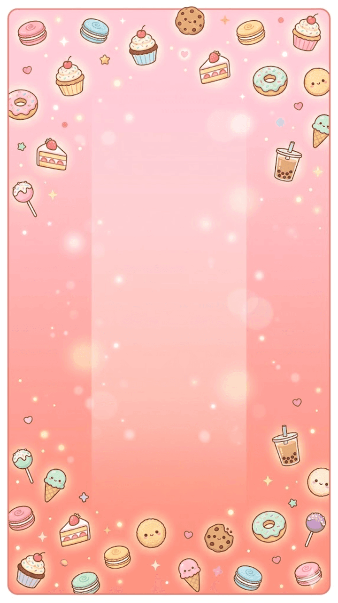

各种情况下的界面状态
在已有 6 屏基础上，补齐玩家真实会遇到的边界 / 空 / 反馈状态——全部沿用同一套设计系统（暖棕文字、果冻按钮、统一线条图标），可直接落回 Cocos。
A 道具栏状态（金币模型）
底部三个入口：锤子（15）· 洗牌（15）· 看广告（+10 金币）。下方两张卡可点击切换「够用 ↔ 不足」，体会引导路径。
道具可用 / 不可用
可用：金币 ≥ 15，价格币为焦糖色，点击即扣费使用。
不足：金币 < 15，锤子 / 洗牌整体去色、价格转红、右上角加锁，并弹出深色引导气泡指向脉动的「看广告 +10」按钮——把死路变成一次激励视频。


锤子 · 选择消除模式
点锤子并扣 15 金币后进入：容器变暗、顶部提示条出现、手指 / 准星跟随，点中的甜品高亮。右上角 ✕ 可取消并退费。
看广告 · 奖励到账
激励视频结束后，顶部滑入 +10 金币 Toast，同时 HUD 金币芯片做一次弹跳。失败复活 / 通关翻倍同款反馈。
B 容器几何 / 警戒（PRD §1 · §6）
容器严格 2:3 竖高（400×600）。B1 验证超线倒计时；B2 验证甜品直径表——尤其「两个 Lv8 恰好并排填满容器宽」这一核心手感。

超线倒计时
堆顶越过警戒线即触发：屏幕边缘红光呼吸、中央 5→1 大字倒计时、底部红色警告条。期间合成下降到线下即可解除。
甜品直径表 · 双 Lv8
直径严格递增（Lv1=40…Lv8=196，约每级 ×1.25）。两个 Lv8 并排恰好填满容器内宽——这是合成顶端的核心手感，圆形刚体 radius = 直径/2。值见 cocos-mapping.md §4。
C 暂停弹窗（PRD §6 要求，之前缺）
点 HUD 暂停按钮弹出，含继续 / 重开 / 回主页与音乐音效快捷开关。

暂停
游戏暂停、背景虚化。继续为主按钮；重开 / 主页为幽灵按钮；音乐音效就地可切，无需进设置页。
D 空状态 / 网络异常
没有数据、断网等情况也要给玩家一个有温度的出口，而不是空白页或冷冰冰报错。


本周还没有好友上榜
邀请好友一起开甜品店，比比谁的猫客更多～
排行榜 · 无好友数据
榜单为空时，用蓝猫 + 一句邀请话术替代空列表，主按钮直接拉起邀请好友，把空态变成增长入口。
断网 / 重连
登录、上传分数、看广告失败时顶部 Toast 提示并自动重试；不阻断当前对局，本地进度先存，连上再同步。
激励视频 · 无填充 / 失败
抖音常见 no-fill：拉取失败 / 暂无广告时给明确反馈，不消耗道具门槛、不扣奖励，按钮保留可重试。前 1–2 关隐藏所有激励位（见 04-economy §64）。

网络开小差，或暂未授权抖音账号。可重试，也能先用离线模式逛逛——进度本地保存，联网后自动同步。
登录失败 / 授权拒绝
加载阶段登录失败、用户拒绝授权或 401 需重登（06-backend §168）时弹出：重新登录 为主按钮，离线模式 兜底，不把玩家堵在加载页。
实现备注（交给程序对齐）
- 道具为金币门槛，非库存：可用判断 = 金币 ≥ 15；不足时按钮置
.is-disabled并引导看广告，不要直接灰掉无反馈。 - 锤子选择模式是一个独立交互态：进入即扣费、点中消除、点 ✕ 退费；洗牌则是确认即执行无需选择。
- 警戒线倒计时对应 PRD §6 的 5 秒判负窗口，倒计时数字与边缘红光建议用同一个状态机驱动。
- 暂停弹窗补齐了 PRD §6 列出但之前 6 屏未覆盖的界面；音乐 / 音效开关与设置页共用同一份配置。
- 这些状态样式已写入
css/app.css末尾「状态补充」段，可直接在game.html复用，也方便切成 Cocos prefab。